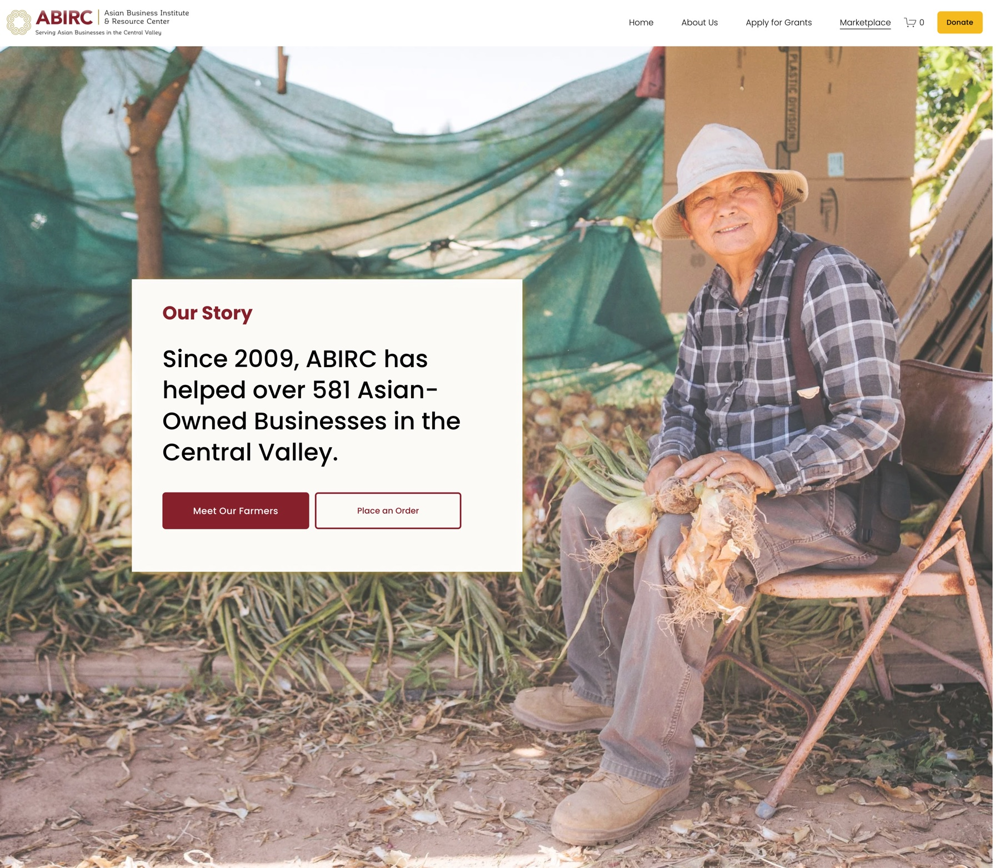
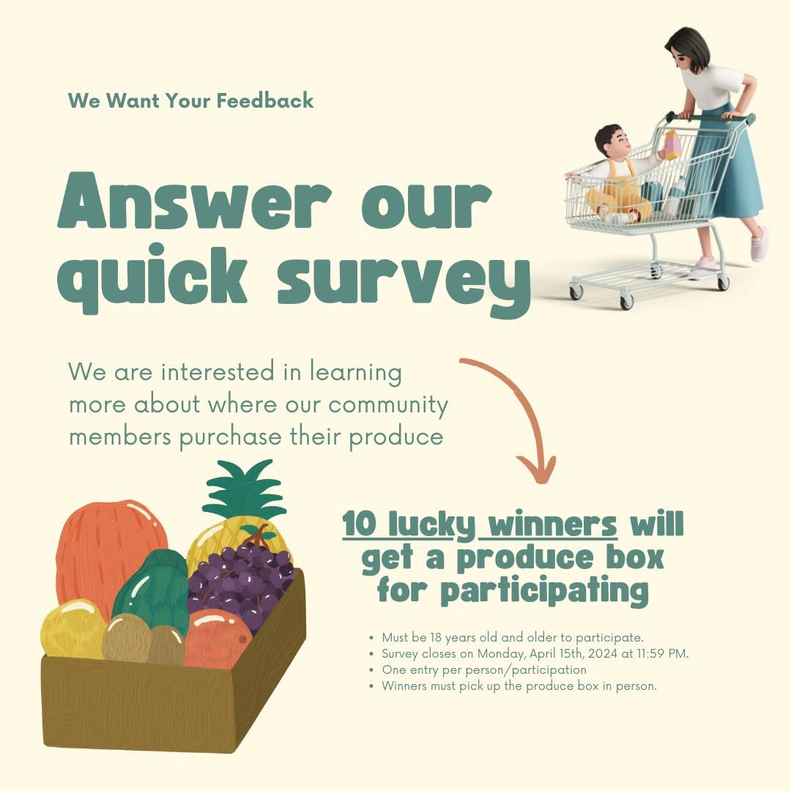
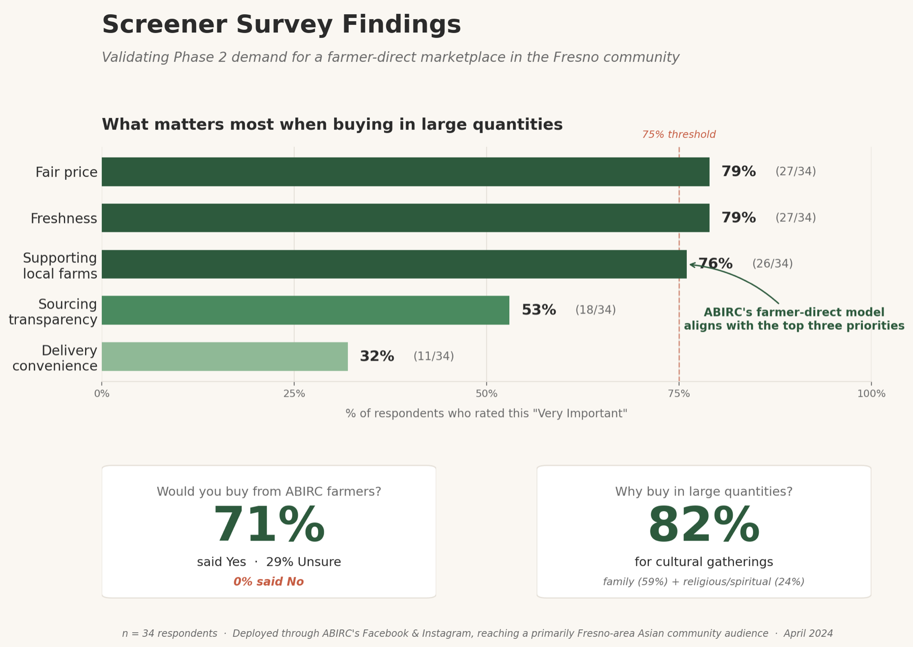
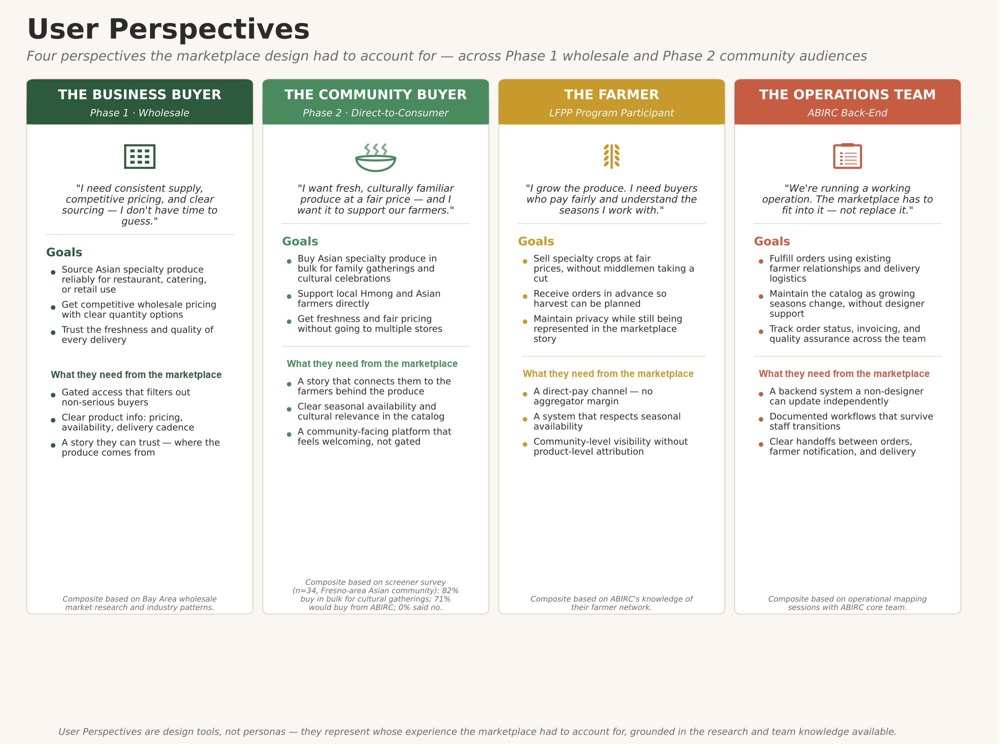
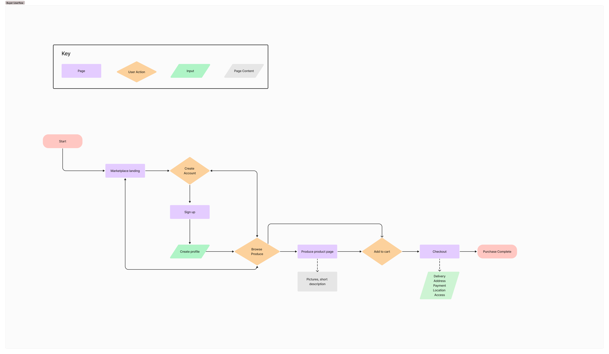
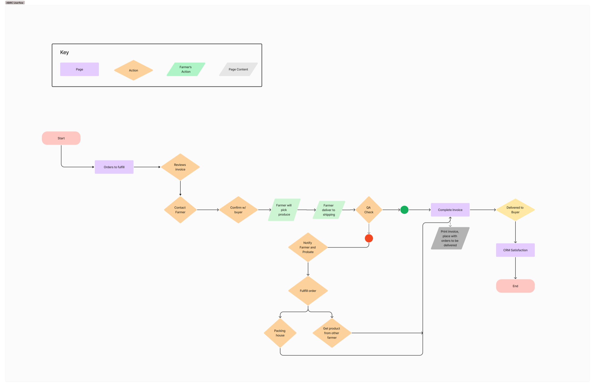
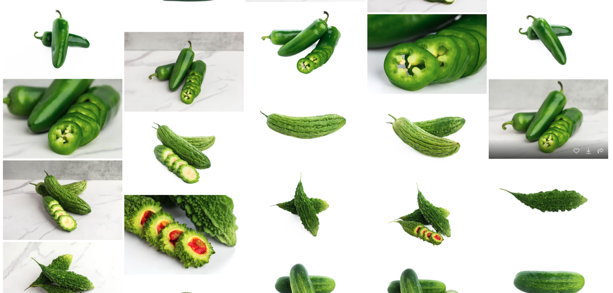

// Case Study — Wholesale Marketplace · UX Design · 2024
When the brief says "build it for tomorrow," what do you owe today?
ABIRC Marketplace — a wholesale produce platform built on a grant, a deadline, and a design that had to quietly serve two audiences from a single build.

ABIRC — serving Asian-owned farms and small businesses across the Central Valley.
01 — Project at a Glance
ABIRC Marketplace
Client
Asian Business Institute and Resource Center (ABIRC) — Fresno, CA
My Role
UX Designer — research, wireframes, prototyping, usability testing
Timeline
March 2024 – October 2024
Tools
Figma, Google Forms, Zoom, Squarespace
Methods
Competitive research, stakeholder interviews, screener survey, wireframes, moderated usability testing
Outcome
Delivered functional online marketplace
Key Collaborators
02 — The Brief
A grant, a deadline, and a marketplace that had to serve two audiences from one build.
ABIRC had a grant, a deadline, and a vision split across two phases. Phase 1 would launch a wholesale marketplace selling Asian specialty produce to Bay Area buyers. Phase 2 — contingent on future funding — would expand to direct-to-consumer in the Fresno community.
The brief said: build Phase 1 in a way that scales into Phase 2.
What it didn't say — what surfaced through research — was that Phase 1's market was already saturated, Phase 2's demand was the one we'd actually validated, and the design would have to serve two audiences from a single build. That tension shaped every decision I made on this project.
03 — What Shipped
The ABIRC Marketplace launched and met every benchmark the grant defined, while operating fully within the project's financial and organizational constraints.

The live ABIRC Marketplace — built story-first, not shop-first.
Deliverables
-
July 2024
Soft-launched on the original target date with invited Bay Area buyers
-
September 2024
Public launch and outcomes reported; project closed within scope and budget
What I shipped
- — A wholesale marketplace built with Squarespace, structured around storytelling
- — A seasonal produce library that enables non-technical staff to maintain the catalog
- — Three documented user flows (buyer, farmer, ABIRC fulfillment operations) that defined both the product experience and the operational model for running the marketplace day to day
- — Competitive and market research that didn't exist when the grant was written — now part of ABIRC's institutional knowledge
- — A strategic recommendation for a regional pivot that ABIRC's leadership can revisit when future funding allows
04 — The Constraints We Couldn't Change
ABIRC envisioned the work in two phases: Phase 1, funded by this grant, an online marketplace selling Asian specialty produce to Bay Area wholesale businesses; and Phase 2, a long-term aspiration contingent on future funding, expanding to general consumers in the Fresno community. Within this challenge sat two layered problems that shaped my design decisions.
Problem 01
The market was already saturated and the project couldn't pivot away from it. Research surfaced that the Bay Area was already heavily served by wholesalers also selling Asian specialty crops. I recommended refocusing on ABIRC's existing Fresno customer base, but grant terms locked the audience to the Bay Area.
Trade-off / Solution
Amplify ABIRC's farmer-direct model to highlight their competitive edge.
Problem 02
The marketplace had to integrate with ABIRC's existing operations. ABIRC was already running a working operation — vegetable boxes, farmer relationships, and established fulfillment practices.
Solution
Surfaced and translated workflows into documented user flows.
05 — What the Research Surfaced
No research existed when the grant was written. So I ran it — and what it surfaced reshaped the design.
The work split across three tracks: competitive analysis (Phase 1 market landscape), a screener survey (Phase 2 demand validation), and internal discovery of ABIRC's existing operations.
Competitive & Market Research
Analyzing the Bay Area and Fresno wholesale produce landscape to understand who ABIRC would compete against, and what differentiated them.
The market was crowded. California has 1,175 fruit and vegetable wholesalers (CA EDD), with the Bay Area heavily served by competitors already selling Asian specialty produce. This wasn't an underserved market waiting for a new entrant.
Pattern 01
Membership-gated access was the industry norm — a quality control mechanism and a way to limit exposure to serious buyers.
Pattern 02
Most competitors relied on aggregators, taking a margin between farmer and buyer — revealing ABIRC's direct-seller model as a story-worthy edge.
Validating the Future
A screener survey deployed through ABIRC's social channels, reaching 34 respondents in the Fresno-area Asian community, to validate Phase 2 demand.

76–79%
Rated fair price, freshness, and supporting local farms "Very Important" — aligned directly with ABIRC's farmer-direct model.
71%
Said yes to buying from ABIRC farmers. Zero said no — the rest said "not sure," signaling curiosity, not rejection.
82%
Buy in large quantities for cultural gatherings — family (59%) and religious/spiritual celebrations (24%).

Screener survey findings — n = 34, deployed April 2024.
Internal Discovery & Strategic Recommendation
Mapping how the marketplace would plug into invoicing, farmer notification, quality control, and weekly Bay Area delivery.
Stakeholder mapping happened in parallel. I noticed early that decision-making cadence with the Deputy Director would move faster than alternatives, and adjusted my primary working rhythm accordingly — keeping design decisions unblocked through two team transitions later in the project.
Synthesizing the competitive analysis and survey findings, I brought a strategic recommendation to leadership: the Bay Area wholesale audience was oversaturated, with high risk of low conversion unless additional funding was secured for outreach; a more targeted Phase 1 audience — Asian community centers, local Asian restaurants, farm-to-table operations — could compete on differentiation rather than scale.
Leadership acknowledged the recommendation but had no flexibility to act on it. The grant locked the scope to the Bay Area.
06 — Designing for Two Audiences at Once
The design's job wasn't to sell produce. It was to make ABIRC's farmer-direct model visible — to Phase 1 buyers now, and Phase 2 buyers later.
Insight 01
Industry-standard access gating plus Squarespace budget constraints led to a password-protected model — gated for Phase 1, scalable to membership in Phase 2.
Insight 02
The aggregator norm, and buyers valuing transparency, confirmed the farmer-direct model as ABIRC's real differentiator — surfaced through storytelling.
Insight 03
Seasonal catalog turnover and a non-technical maintenance team required a backend system updatable without designer involvement.
The Buyer, the Farmer, and Everything In Between
I designed the buyer flow directly and facilitated working sessions to surface and document the back-end workflows.
Buyer Flow
How a Bay Area business discovers the marketplace, gets access, browses the catalog, places an order, and receives delivery.
Farmer Flow
How a participating farmer's crop moves from listing to harvest to fulfilled sale.
ABIRC Back-end Flow
Invoice generation, farmer notification, quality assurance, and truck driver coordination.

Four perspectives the marketplace design had to account for. View full size ↗

The buyer flow — discovery through delivery. View full size ↗

The ABIRC fulfillment flow — invoicing, farmer notification, and delivery coordination. View full size ↗
07 — The Pivot
From Selling Produce to Telling a Story
Research confirmed ABIRC's farmer-direct model was their competitive edge. But it wasn't articulated anywhere. The marketplace needed to tell before it could sell. I built three connected pieces:

A values framework — SEED
Sustainability, Equity, Entrepreneurship, Diversity. These weren't values I imposed; they articulated what ABIRC already believed but hadn't put into words.
A multi-page narrative IA
Rather than a typical shop-first marketplace: Our Story → Meet Our Farmers → How to Place an Order → Shop.
Farmer profile copy
Surfacing the specific people behind the produce — something a buyer could read, understand, and trust before placing an order.
Photography Direction
I directed the contracted photographer on two distinct photo types: product photography (3 photos per item, including cut-open shots, so buyers could identify unfamiliar produce) and farmer & community photography, with each shot mapped to a designated place in the design.


Photo direction — every shot mapped to a designated place in the design.
08 — The Produce Library
Building Something That Could Outlive Me
A wholesale marketplace doesn't have a static catalog — items rotate as growing seasons shift. With a non-designer team taking over after my contract ended, the system needed to be maintainable without ongoing design support.
The produce library was built on top of a monthly availability calendar mapping 100+ produce items to their growing seasons. I requested the calendar from ABIRC's Program Manager, whose domain knowledge of the farmers' harvest cycles made him the right person to build it. That calendar fed into the inventory sheet I used to list products in the marketplace — which grew into the full produce library over time.
The library itself covered:
- — Description fields (texture, taste, color, cooking tips, pairings) structured for direct product-page use
- — Storage guidance fields for each item
- — SF and LA Terminal Market pricing data
- — Status flags ("In season," "Not in season," "Need new photos," "Remove") for tracking
The library wasn't just a back-end reference — it was the operational backbone of catalog management, and the single design choice most directly responsive to the mid-project team transitions.


09 — Testing What We'd Built
Moderated usability testing with participants already motivated to use the product.
Findings that validated existing decisions
The storytelling architecture worked
Leading with story before commerce was validated. This confirmed the SEED values framework and the multi-page narrative.
Storage & availability content was valuable
All three participants found storage guidance and seasonality information helpful — validating the content structure of the produce library.
Findings that changed the design
Buyers wanted farmer-product attribution
Two of three asked which farmer grew each product. After discussion, we chose not to implement it — farmer safety and privacy took priority. "Meet Our Farmers" continued to introduce farmers at the community level.
Seasonality should drive visibility, not just labels
All three pushed back on the on-page availability calendar as informational, not actionable: "It's good to know, but if it's not available, I can't order it anyway… so what's the point of showing it?"
I removed the calendar from product pages; the seasonal data stayed as an internal tool for staff in the produce library.


Testing Constraint — Sample Size
Seven of thirty-four screener respondents indicated willingness to participate. Of those, I was able to schedule and complete sessions with three.
Testing Constraint — No Post-Launch Testing
The marketplace was live and ready on the original July target date, but the business outreach that would have brought engaged buyers in did not materialize due to a mid-summer team transition.
10 — Supporting the Launch
Extending the design work into launch prep.
As the July soft launch approached, I supported the team's outreach preparation by designing flyers for outreach and marketing. This wasn't originally in scope. But with the deadline approaching and the marketing work still open, contributing was the fastest path to launch.


11 — What I'd Carry Forward
What I Learned
Design alone doesn't determine commercial outcomes. The marketplace was ready for soft launch on the original July target date and went public in September — but adoption depended on buyer outreach that fell outside the design scope and outside what the project window could fully resource.
I cared about the marketplace succeeding. But caring isn't ownership. My job was to design the platform; bringing buyers in belonged to others. Recognizing where to stop was its own form of professional discipline.
What I See More Clearly Now
The marketplace format made sense as preparation for the direct-to-consumer expansion ABIRC was working toward. But for Phase 1's wholesale audience, a simpler order-list format might have served the project better — visibly surfacing what the project actually still needed, rather than masking those gaps behind a complete-feeling product.
In a next phase, I'd push to separate the form factor for Phase 1 from the vision for Phase 2, even when the same platform has to serve both.